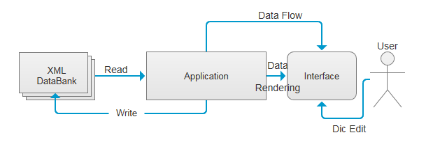

从概念图不难 看出，整个界面被分为左右两部分，左边 是对词典的配置选项，右边是展示数据的地方。在这种设计模式下，可以加入Test的功能方便用户基于一定的范围进行自我测试。
计算机以其高速的搜索速度逐渐改变人们传统上使用词典的习惯， 虽然一个简单的控制台程序可以实现对用户输入的query进行 查询，但在GUI的操作系统的框架下，通过友好的词典用户界面使用电子词典是大多数人的选择。一个良好的词典软件应该是什么样子？ 系统工程师会强调其总体架构的合理性，从词典数据的结构，加载到应用程序的Robustness各个方面都应该有良好的表现， 但对UX设计师来说，一个well-defined的界面风格和友好的交互方式则是关键，或许users也会这样想，只是他们不知道如何更加 专业地表达他们的想法罢了。
本文即是从UX的视角对Desktop这一特定的平台的词典软件进行考察并提出新的设计思路，尽管设计本身的诸多要素是device agnostic,但考虑到不同的平台在屏幕大小、交互方式（mouse keyboard or touch screen)上有一定的区别， 本文仅以最传统的电子词典平台为例进行分析。
一种较为简单的框架是将original and translation 作为pairs用Table View呈现出来，
尽管在词典元素方面与传统纸制词典相差甚远,但考虑到大多数查询需求也是局限于pairs，故这种做法仍不失为一种可选择的方案。
下图即是基于pairs的一种词典界面方案：
从概念图不难
看出，整个界面被分为左右两部分，左边
是对词典的配置选项，右边是展示数据的地方。在这种设计模式下，可以加入Test的功能方便用户基于一定的范围进行自我测试。
与之十分类似，但界面更简洁的一种设计概念图如下：
与前一种相比该方案更突出了Edit and Search两大功能，
界面采用Top-Middle-Bottom的水平布局进行组织，更加符合一般PC软件界面的特点。
以上两个cases均出自开源软件Qt平台的open project,尽管已经具备一些基本的设计要素，但受限于其词典内容不够丰富， 交互不够直接等因素，与商业化的词典软件相比还有很大差距。
那么一个符号UX设计理念的电子词典应该是什么样子？有哪些Research结果可以利用呢？
这一点，中国的情形比较特殊。改革开放以来，我国的外语市场逐渐升温，而随着计算机的普及，作为 工具性软件的电子词典自然也是各路商家的必争之地。在一片词典开发的热潮中，有学者指出我们的电子词典开发项目存在 急功近利，盲目引进国外权威词典，不借鉴传统词典编纂规律与缺少用户分析等诸多问题。
对于引起这些问题的原因，从各路电子词典自身的宣传中不难窥见端倪。电子词典在自我宣传中，往往强调其作为软件 的功能性和可以加载的词典数量等因素，而忽视了词典本身的建设。相比国外知名的辞书品牌，能为国内人熟知的电子辞典仅仅是 技术支持提供者而不是内容提供者，在技术圈里存在忽视词典内容建设，而无法根据词典使用者的特性进行量体裁衣。在学术圈内 ，各路研究过于理论化，所讨论的内容无法指导实际的项目开发，这种理论与实践脱节的现状严重制约着我国电子辞书的突破性 发展。
对于这样具体领域的应用应该将应用语言学的理念与一般的设计模式加以结合，一方面要建立词典的数据模型，另一方面要在 Human and System之间的交互上下功夫。以下基于实际的项目提出一种简化的电子词典架构：
传统的纸制词典以Entry为基本单元，采用alphabetical order进行组织，大多数电子词典沿袭了这种方式，但在实现途径 上，往往采用html+css技术直接将Entry中的数据进行渲染，用一种压缩化的方式形成特有的二进制数据文件，只能被特定的软件 打开，由于各家词典数据文件不一，这给数据交换与资源的再利用造成了很大的barrier,对此，国际上早已经有文本赋码规范（SGML) 也有专门的团体推广电子词典领域内的Markup Language. 其总体思想是将数据与展示分开，数据文件采用plain text + 文档标记。 考虑到词典本身加上标记语言的数据量并不大，而往往特定的渲染标记却有很大的文本量，因此采用标记语言来存储词典数据无论从 易维护性、可交换性和文件大小方面都有其优越性。尽管数据与展示分开给应用程序的开发增加了新的要求，但这一点可以通过开发 平台上相对应的模块所解决，比如可以动态加载XML,在MVC的设计模式下将数据展示给用户。
XML作为SCML的一个子集已经在很多领域中发挥其“数据仓库”的作用，笔者所提出的电子词典架构的数据模型即是基于XML。 通过Qt平台下的Model/View Module将其通过TreeView展示出来，构成了整个软件的核心。概念图如下：
以上主要讨论了PC平台上电子词典的设计模式，并提出了个人在这方面的设计思路，以指导之后的开发工作。